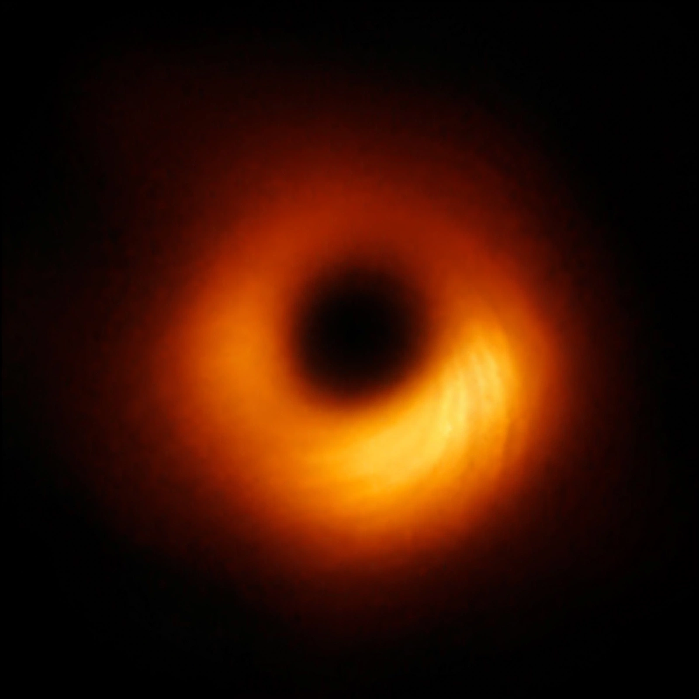

Event Horizon Telescope
| Type | Global VLBI array of radio telescopes |
|---|---|
| First image | M87* black hole shadow, released 10 April 2019 |
| Second image | Sagittarius A*, released 12 May 2022 |

[Image: The 2019 image of the black hole in M87: an orange glowing ring around a dark shadow]The Event Horizon Telescope (EHT) is a large telescope array consisting of a global network of radio telescopes. Using very-long-baseline interferometry (VLBI), the many dishes act as a single Earth-sized virtual telescope, achieving the angular resolution needed to observe the immediate surroundings of supermassive black holes.
On 10 April 2019 the EHT Collaboration released the first direct image of a black hole — the shadow of the 6.5-billion-solar-mass black hole in the galaxy M87, a glowing ring of superheated gas 42 microarcseconds across — and on 12 May 2022 the first image of Sagittarius A*, the four-million-solar-mass black hole at the centre of the Milky Way. Both images match the predictions of General relativity for a Kerr black hole, and the M87 image is among the most famous scientific images ever published.
How it works
Observing at a wavelength of 1.3 mm, stations from Hawaii and Arizona to Spain, Chile and the South Pole record the same radio waves with atomic-clock timestamps; the petabytes of data (too large for the internet, the hard drives are flown to central correlators) are combined to synthesise an aperture the size of the planet. Imaging algorithms then reconstruct a picture from the sparse data — the field of computational imaging (including work by Katie Bouman) was crucial to the result.
Results and future
Beyond the iconic rings, the EHT has imaged polarised light revealing magnetic fields around M87*, measured the black holes' shadows to test general relativity in strong fields, and probed the base of M87's relativistic jet. Planned expansions (the next-generation EHT) aim for more stations, higher frequencies and eventually movies of orbiting plasma.